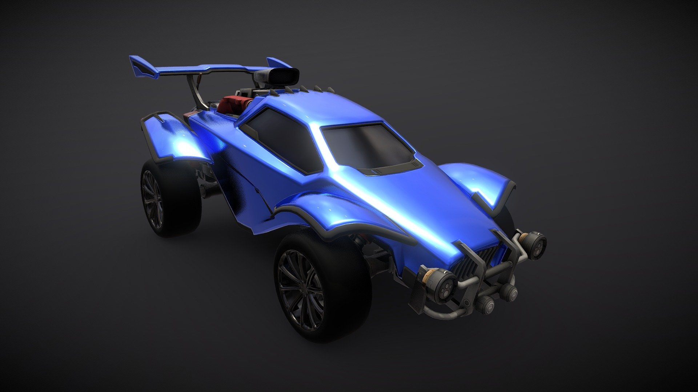
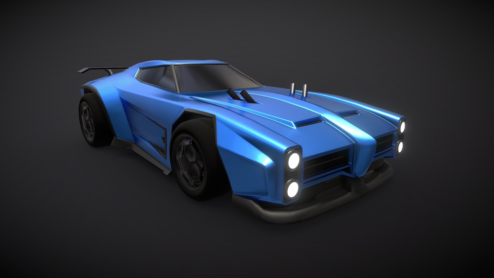
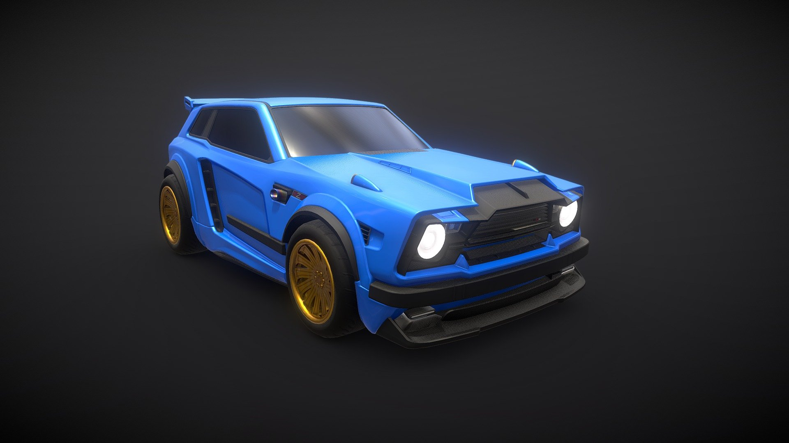

CAR MODELS
Here will be introduced three of the most used car models within Rocket League amongst competitive players from around the world. There are currently a whopping 100+ unique car models within the game, but here's where it gets interesting; there are only 6 different types of hitboxes within all of these car models. This means there are techincally only 6 truly different cars, otherwise, the models could be classified as cosmetic. The hitboxes are only slightly different shape-wise, so it doesn't really affect the game too much or how your car interacts with the ball. These very slight differences make this game a unique experience across each player, and increases the individuality within player styles and how they play the game, and doesn't affect skill to a point where it makes much of a difference, if at all, in game.
Octane
Random Octane Facts
- Octane is the default car model in Rocket League
- Octane is the most used model within the competitive community
- Octane has various different versions of itself due to its' popularity
- Octane was in the original beta version of the game, 'Supersonic Acrobatic Rocket-Powered Battle-Cars, also with the same name, but completely different model
- Octane is considered (technically) the best model to play with, but the differences that make it better than others are almost microscopic
Dominus
Random Dominus Facts
- Dominus has the flattest hitbox amongst all other models
- Due to its' flatness, a lot of freestyle Rocket League players tend to use this model, as it makes it easier to possess the ball while in mid-air or on ground
- Dominus is the third most-used model in Rocket League
- The Dominus resembles//is based on the 1970 Pontiac Firebird Trans Am
- The Dominus was originally DLC but is now available to all players for free, just like Octane
Fennec
Random Fennec Facts
- The Fennec has the same exact dimensions//hitbox as the Octane model
- Fennec is an import item, which means it is very rare, and can only be unlocked through item drops or trades
- Fennec is based on the Lancia Delta Integrale
- The Fennec is the second most-used rocket league car, right behind Octane
- Fennec is typically associated with players that try too hard in the game (i.e., sweats, try-hards, etc.)